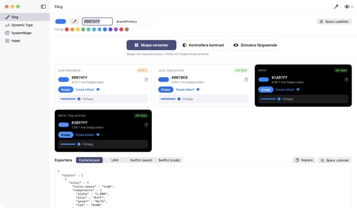
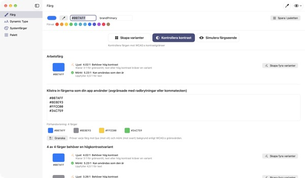
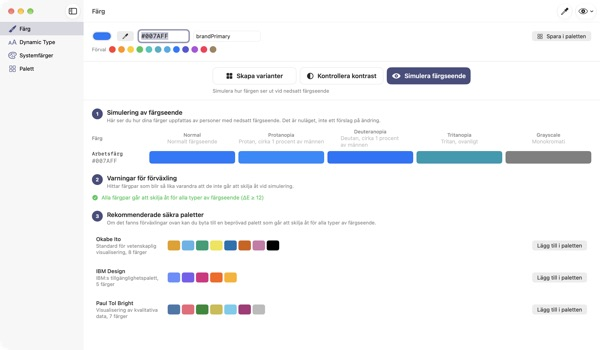
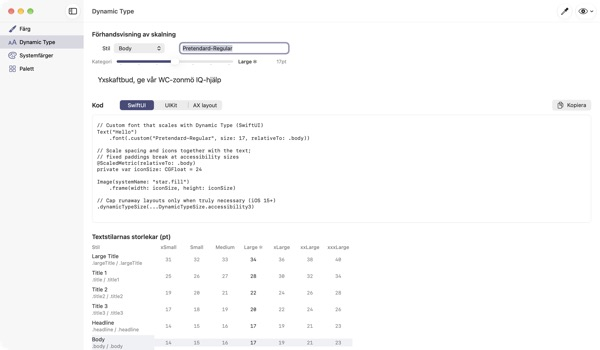

En färg in,
fyra utseenden ut
Systemfärger anpassar sig själva till mörkt läge och Öka kontrast. Dina varumärkesfärger gör det inte. TetraTint tar en färg från ljust läge, skapar varianterna Ljust, Ljust hög kontrast, Mörkt och Mörkt hög kontrast och exporterar dem direkt till Xcode.
Alla funktioner är gratis. Kräver macOS 14 eller senare.

Testa din varumärkesfärg
Klistra in ett hexvärde eller tryck på ett förval. Med samma uträkning som i appen ser du direkt alla fyra varianter och deras kontrast.
Har din varumärkesfärg försvunnit i mörkt läge?
Den blå du valde i ljust läge ser grumlig ut mot svart, och den som har Öka kontrast påslaget kan knappt läsa texten. Att leta färg för varje utseende och räkna ut kontrasten för hand tar en halv dag. TetraTint härleder varianterna så som systemfärger skiftar mellan utseenden och visar direkt om varje variant klarar sig.
Kontrollera alla färger du använder på en gång
Klistra in hela hexlistan från din app så bedöms varje färg: kan användas som den är, behöver hög kontrast eller endast som dekoration.
Ett klick gör en problemfärg till fyra varianter i paletten. Bra även när du förbereder tillgänglighetsmärkningen Tillräcklig kontrast på App Store.

Se med färgblindas ögon
Se paletten med protanopi, deuteranopi, tritanopi och i gråskala, och få en varning för par som blir svåra att skilja åt.
Ladda de färgblindvänliga paletterna Okabe–Ito, IBM och Paul Tol med ett klick, eller använd ögonknappen uppe till höger för att se hela appen så.

Egna typsnitt följer textstorleken
Se alla 11 textstilar i 7 storlekar och dra i ett reglage för att se de verkliga storlekarna.
Ange typsnittets PostScript-namn och få kod för UIKit, SwiftUI och @ScaledMetric, plus kod som byter layout vid stor text.

Kom igång i tre steg
- 1
Ange en grundfärg
Klistra in en hex, hämta en färg var som helst på skärmen med pipetten eller välj ett förval.
- 2
Kontrollera de fyra varianterna
Läs kontrastmärkena och justera varianter som inte passar varumärket med färgväljaren.
- 3
Exportera till Xcode
Kopiera eller spara som Contents.json, .colorset eller UIKit- och SwiftUI-kod.
Så skapas varianterna och det här betyder märkena
- Ljust (standard)
- Din färg som du angav den
- Ljust, hög kontrast
- Något mättare och mörkare tills den når 4.5:1 mot vitt
- Mörkt
- Något ljusare och klarare (ljushet +5, mättnad +3)
- Mörkt, hög kontrast
- Ljusare tills den når 7:1 mot svart
- AA-text
- Minst 4.5:1 mot bakgrunden, fungerar för brödtext
- UI 3:1
- Minst 3:1, räcker för knappar och symboler men inte för text
- Låg
- Under 3:1, använd inte för text, symboler eller status
- Export
- Contents.json · .colorset · UIKit · SwiftUI, eller hela paletten som en .xcassets
Referensvärdena för systemfärger kommer från Apples Human Interface Guidelines och kan ändras med systemuppdateringar. Använd API:erna för systemfärger i den färdiga appen.
Vanliga frågor
Är det verkligen gratis?
Ja. Alla funktioner är gratis, utan konto och utan reklam. Om appen hjälpte dig kan du ge dricks under Inställningar; det låser inte upp något.
De skapade varianterna passar inte vårt varumärke.
Justera varje variant med färgväljaren på kortet. Skapa om alla slänger dina manuella ändringar och härleder allt på nytt från grundfärgen.
Hur räknas varianterna ut?
De följer hur Apples systemfärger faktiskt skiftar mellan utseenden: något ljusare och klarare i mörkt, minst 4.5:1 mot vitt i ljust med hög kontrast och minst 7:1 mot svart i mörkt med hög kontrast.
Vad betyder en varning i simuleringen av färgseende?
Att skillnaden mellan två färger (ΔE) faller under 12 i den simuleringen så att de blir svåra att skilja åt. Lita inte bara på färg: lägg till symboler, mönster eller etiketter, eller byt till en färgblindvänlig palett.
Hur får jag ett eget typsnitt att stödja Dynamic Type?
Ange typsnittets PostScript-namn under Dynamic Type och välj en stil, så får du kod för UIKit, SwiftUI och @ScaledMetric. I tillgänglighetsstorlekar blir Body över tre gånger så stor, så undvik fasta höjder och lineLimit(1).
Exporterade färger ser annorlunda ut än systemfärgerna i min app.
Referensvärdena kommer från Human Interface Guidelines och kan ändras mellan systemversioner. Använd alltid API:erna UIColor eller Color för systemfärger.
Var sparas min palett?
Bara på din dator. Inget synkroniseras till molnet eller skickas någonstans. Se integritetspolicyn för mer information.
Sparas en färg jag hämtar med pipetten?
Nej. Bara färgvärdet i den punkt du väljer läses av och blir arbetsfärg. Ingen skärmbild sparas eller skickas.
Vilka Mac-datorer fungerar den på?
macOS 14 (Sonoma) eller senare. När du exporterar väljer du själv var filerna sparas.
Buggar, idéer eller frågor? Skriv till leeo@kakao.com. Vi svarar oftast inom 2–3 dagar.